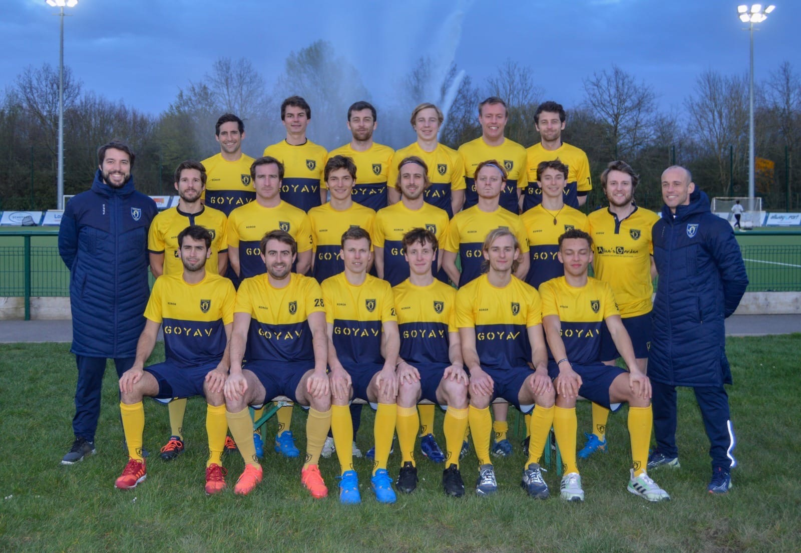
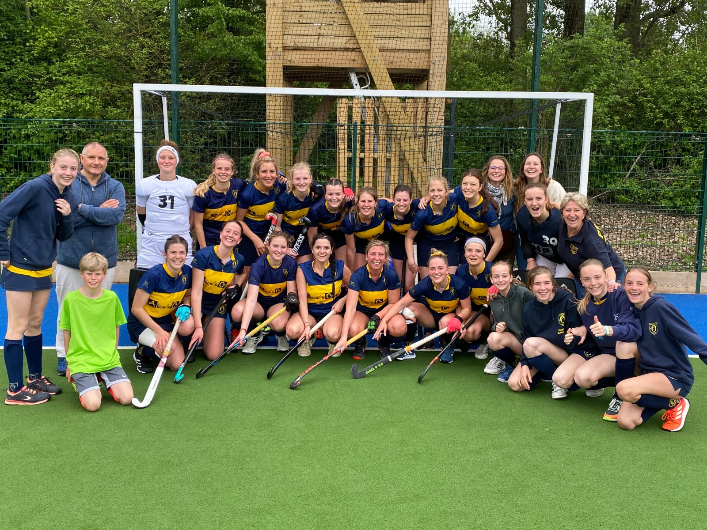

Terre de Jeux 2024
Base d'entraînement officielle pour des équipes olympiques pendant Paris 2024. Le label invite tous les territoires à vivre les temps forts des Jeux et à faire bouger leurs habitants.
Marcq-en-Barœul, depuis 1932
Le plus grand club de hockey sur gazon de France : plus de 600 licenciés, des équipes en Élite et Nationale 1, et une école de hockey ouverte aux filles et aux garçons dès 5 ans.
Au Polo, on conjugue sport et convivialité, amitié, tolérance et respect. Des tout-petits de la Polo School aux équipes premières, plus de 600 licenciés partagent le même terrain, le même maillot jaune et les mêmes valeurs : family, fun and work.
Nos équipes féminines, masculines et jeunes évoluent du championnat régional jusqu'à l'Élite et la Nationale 1. Depuis 2024, nos installations sont Centre de Préparation officiel aux Jeux olympiques de Paris 2024.
Les archives mentionnent déjà une section hockey sur gazon au Racing Club de Roubaix.
Le club s'entraîne sur le terrain de polo prêté par la famille de Michel Détroyat, au château de l'aérodrome de Beaumont à Roubaix. Le Racing devient le Polo Hockey Club et s'affilie à la Fédération française de hockey.
Après la guerre, le club s'installe à Hem sur un terrain généreusement prêté par la famille Brabant. Il y restera près de 50 ans et y gagnera sa place en Nationale 1.
Départ de Hem et début de « sept années de vaches maigres », un club nomade sans terrain à lui.
La ville de Marcq-en-Barœul accueille le Polo au sein de l'Hippodrome des Flandres, sur deux hectares au Chemin Poivré. Le club-house est construit en 1990.
Après quatre ans de travaux : nouveau terrain synthétique arrosé, parking et installations aux normes, inaugurés en septembre.
Le Chemin Poivré devient Centre de Préparation officiel aux Jeux olympiques de Paris 2024.
Base d'entraînement officielle pour des équipes olympiques pendant Paris 2024. Le label invite tous les territoires à vivre les temps forts des Jeux et à faire bouger leurs habitants.
Décerné en 2016 par le Comité départemental olympique et sportif pour notre engagement en faveur du hockey féminin : faciliter l'accès des filles et des femmes au jeu et aux responsabilités, mieux structurer l'offre sportive féminine, et adapter nos installations.
Deux équipes fanions, et derrière elles toutes les catégories jeunes, seniors et loisirs.


Filles et garçons peuvent découvrir le hockey sur gazon dès 5 ans lors d'une séance d'initiation. On vous prête la crosse, vous venez comme vous êtes.
Pour trouver le créneau adapté à l'âge de votre enfant, contactez Sylvie Petitjean :
La crosse est fournie par le club.
La licence est valable du 1er septembre au 30 juin. Les renouvellements sont prioritaires jusqu'au 15 mai ; les nouveaux joueurs sont prévenus fin mai.
Le lien vous est envoyé par votre parent relais ou par le secrétariat. Cochez toutes les cases et ajoutez une photo.
Prenez connaissance des documents d'information de la saison envoyés avec le lien.
Vous le gardez : il n'est pas à envoyer au club. Un certificat médical peut être demandé selon les cas ci-dessous.
Questionnaire de santé pour mineur. Certificat médical obligatoire pour certaines années de naissance, précisées chaque saison (en 2025-2026 : joueurs nés en 2007, 2008 et 2009).
Renouvellement : questionnaire de santé, ou certificat médical si vous avez répondu « oui » à une question. Première licence senior : certificat médical obligatoire.
Un certificat médical est valable 3 ans. Vérifiez sa date sur votre espace FFH.
Dates et programmes des stages sont envoyés sur l'application TeamPulse et par votre parent relais.
Studying in Lille and share our values of family, fun and work? Our first and second teams play at the highest level in France. Email us or call +33 6 61 41 81 97 and tell us a bit about yourself.
Le jaune, c'est pour les matchs. À l'entraînement, chaussettes marine.
Équipement et textile en partenariat avec Hockey Player.
Notre objectif : que chaque match soit sifflé par des arbitres formés.
L'académie fait progresser la connaissance des règles à tous les niveaux et accompagne les arbitres, en particulier les jeunes en formation. Elle est ouverte à tous ceux qui veulent mieux arbitrer, pour eux-mêmes, pour le club ou pour viser une carrière d'arbitre national.
Merci à l'ensemble des partenaires qui soutiennent le club dans son projet.
Votre entreprise souhaite rejoindre l'aventure ? Parlons-en.
polohockeyclub@gmail.com
06 61 41 81 97